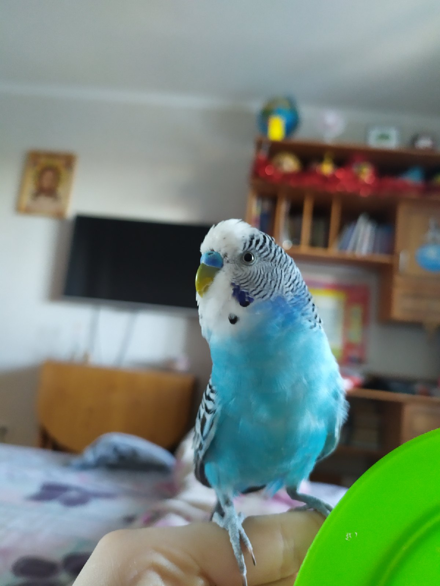
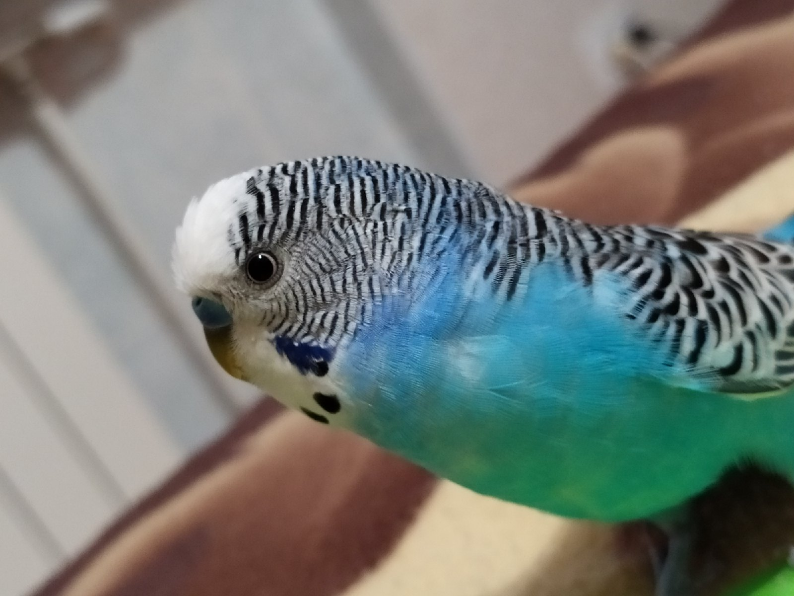
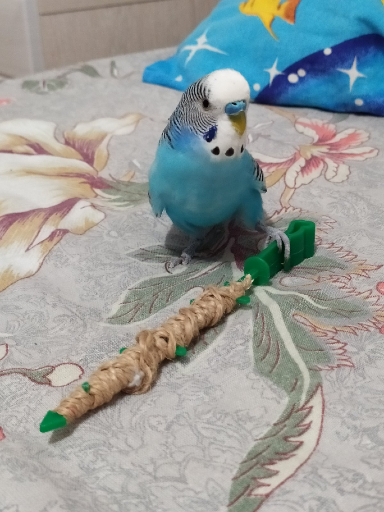
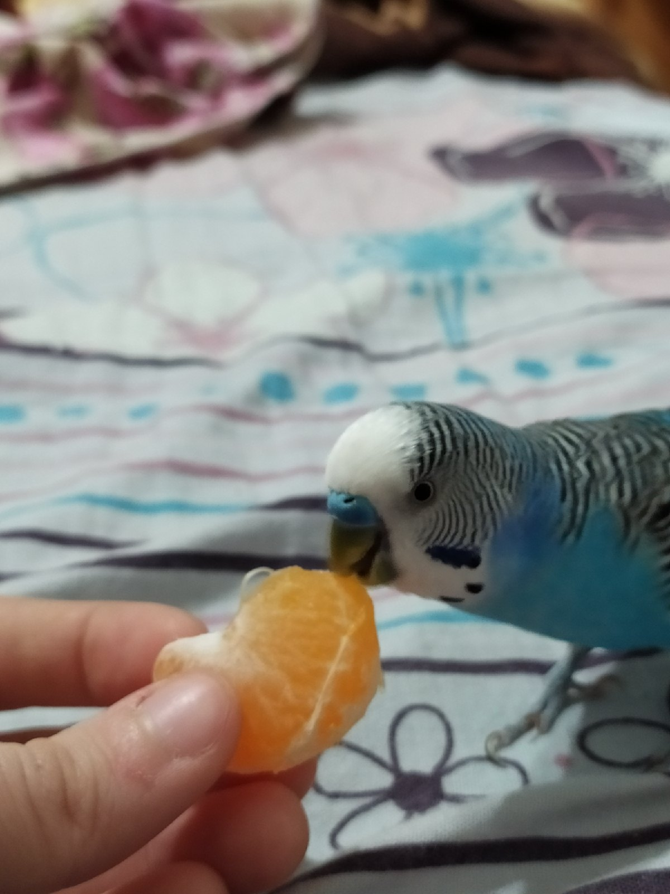

У меня дома живет удивительная птица, которая может разговаривать. Это мальчик, его зовут Рома. Он довольно маленьких размеров, 15-20 см, а весом даже меньше 45 граммов. У него нежно-голубая окраска оперения, а по бокам головы есть маленькие сине-фиолетовые пятнышки, называемые «щечками». По всему телу и голове идут черные своеобразные волны, из-за них, кстати, и назвали попугаев - волнистыми.
Эта птица обладает одной удивительной способностью - может разговаривать. С самого утра он начинает громко чирикать, если честно, это иногда даже раздражает, но не смотря на это, он - самый любимый питомец. Рома обладает очень своеобразным характером, иногда даже кажется, что понимает нас, людей, с полуслова. Если его рано положить спать, Рома может даже обидеться. Попугайчик появился у нас, когда ему было всего 2 месяца, и с самого детства он к нам привыкал. Мы старались учить его разным фразам, словам, и на данный момент он может сказать свое имя и слово "птичка".
У него есть очень много игрушек. Мои родители своими руками сделали ему игровой стенд, на котором большое разнообразие игр. Там есть карусель, колокольчики, качельки, зеркальце и много всего другого. Какие-либо фигурки, палочки, маленькие мячики, он любит скидывать на пол и бегать играть с ними. В самой клетке тоже висят колокольчики, и даже есть его одна из любимых игрушек – пластмассовая птичка, которая сидит на одной из веток. Клетка у попугая закрыта только ночью, а в любое другое время суток он постоянно играет и летает по комнате.
Рома очень любит прилетать к нам, когда мы чем-либо заняты, или зовем его, с целью чем-то угостить. Питается он зерновой смесью, в которую входят : просо, овес, семена подсолнечника, дробленая кукуруза, канареечное семя, семена трав, гречневая крупа, льняное семя и другие. В клетке у Ромы также стоит песок, который помогает пищеварению, а на стенках клетки висит мел. Кроме зерен стараемся угощать его различными фруктами и овощами. Заметили, что больше всего он любит яблоко, мандарин, огурец и капусту. Иногда даем ему «лакомство», он его очень любит, но оно с небольшим добавлением сахара, поэтому стараемся не переусердствовать с этим.